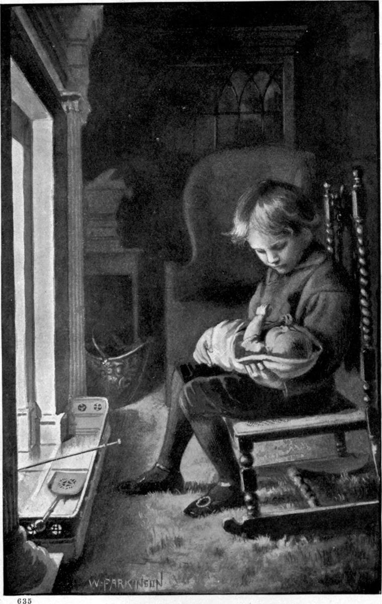

Mr. Porson was a man about five and forty; his wife was a few years younger. His theories of religion were neither large nor lofty; he accepted those that were handed down to him, and did not trouble himself as to whether they were correct. He did what was better: he tried constantly to obey the law of God, whether he found it in the Bible or in his own heart. Thus he was greater in the kingdom of heaven than thousands that knew more, had better theories about God, and could talk much more fluently concerning religion than he. By obeying God he let God teach him. So his heart was always growing; and where the heart grows, there is no fear of the intellect; there it also grows, and in the best fashion of growth. He was very good to his people, and not foolishly kind. He tried his best to help them to be what they ought to be, to make them bear their troubles, be true to one another, and govern themselves. He was like a father to them. For some, of course, he could do but little, because they were locked boxes with nothing in them; but for a few he did much. Perhaps it was because he was so good to his flock that God gave him little Clare to bring up. Perhaps it was because he and his wife were so good to Clare, that by and by a wonderful thing took place.
About three years after the earthquake, Mrs. Porson had a baby-girl sent her for her very own. The father and mother thought themselves the happiest couple on the face of the earth—and who knows but they were! If they were not, so much the better! for then, happy as they were, there were happier yet than they; and who, in his greatest happiness, would not be happier still to know that the earth held happier than he!
When Clare first saw the baby, he looked down on her with solemn, unmoved countenance, and gazed changeless for a whole minute. He thought there had been another earthquake, that another church-dome had fallen, and another child been found and brought home from the ruin. Then light began to grow somewhere under his face. His mother, full as was her heart of her new child, watched his countenance anxiously. The light under his face grew and grew, till his face was radiant. Then out of the midst of the shining broke the heavenliest smile she had ever seen on human countenance—a smile that was a clearer revelation of God than ten thousand books about him. For what must not that God be, who had made the boy that smiled such a smile and never knew it! After this he smiled occasionally, though it was but seldom. He never laughed—that is, not until years after this time; but, on the other hand, he never looked sullen. A quiet peace, like the stillness of a long summer twilight in the north, dwelt upon his visage, and appeared to model his every motion. Part of his life seemed away, and he waiting for it to come back. Then he would be merry!
He was never in a hurry, yet always doing something—always, that is, when he was not in his own room. There his mother would sometimes find him sitting absolutely still, with his hands on his knees. Nor was she sorry to surprise him thus, for then she was sure of one of his rare smiles. She thought he must then be dreaming of his own mother, and a pang would go through her at the thought that he would one day love her more than herself. “He will laugh then!” she said. She did not think how the gratitude of that mother would one day overwhelm her with gladness.
He never sought to be caressed, but always snuggled to one that drew him close. Never once did he push any one away. He learned what lessons were set him—not very fast, but with persistent endeavour to understand. He was greatly given to reading, but not particularly quick. He thus escaped much fancying that he knew when he did not know—a quicksand into which fall so many clever boys and girls. Give me a slow, steady boy, who knows when he does not know a thing! To know that you do not know, is to be a small prophet. Such a boy has a glimmer of the something he does not know, or at least of the place where it is; while the boy who easily grasps the words that stand for a thing, is apt to think he knows the thing itself when he sees but the wrapper of it—thinks he knows the church when he has caught sight of the weather-cock. Mrs. Porson could see the understanding of a thing gradually burst into blossom on the boy’s face. It did not smile, it only shone. Understanding is light; it needs love to change light into a smile.
There was something in the boy that his parents hardly hoped to understand; something in his face that made them long to know what was going on in him, but made them doubt if ever in this life they should. He was not concealing anything from them. He did not know that he had anything to tell, or that they wanted to know anything. He never doubted that everybody saw him just as he felt himself; his soul seemed bare to all the world. But he knew little of what was passing in him: child or man never knows more than a small part of that.
When first he was allowed to take the little Mary in his arms, he sitting on a stool at his mother’s feet, it was almost a new start in his existence. A new confidence was born in his spirit. Mrs. Porson could read, as if reflected in his countenance, the pride and tenderness that composed so much of her own conscious motherhood. A certain staidness, almost sternness, took possession of his face as he bent over the helpless creature, half on his knees, half in his arms—the sternness of a protecting divinity that knew danger not afar. He had taken a step upward in being; he was aware in himself, without knowing it, of the dignity of fatherhood. Even now he knew what so many seem never to learn, that a man is the defender of the weak; that, if a man is his brother’s keeper, still more is he his sister’s. She belonged to him, therefore he was hers in the slavery of love, which alone is freedom. So reverential and so careful did he show himself, that soon his mother trusted him, to the extent of his power, more than any nurse.
By and by she made the delightful discovery that, when he was alone with the baby, the silent boy could talk. Where was no need or hope of being understood, his words began to flow—with a rhythmical cadence that seemed ever on the verge of verse. When first his mother heard the sweet murmur of his voice, she listened; and then first she learned what a hold the terrible thing that had given him into her arms had upon him. For she heard him half singing, half saying—
“Baby, baby, do not grow. Keep small, and lie on my lap, and dream of walking, but never walk; for when you walk you will run, and when you run you will go away with father and mother—away to a big place where the ground goes up to the sky; and you will go up the ground that goes up to the sky, and you will come to a big church, and you will go into the church; and the ground and the church and the sky will go _hurr, hurr, hurr_; and the sky, full of angels, will come down with a great roar; and all the yards and sails will drop out of the sky, and tumble down father and mother, and hold them down that they cannot get up again; and then you will have nobody but me. I will do all I can, but I am only brother Clare, and you will want, want, want mother and father, mother and father, and they will be always coming, and never be come, not for ever so long! Don’t grow a big girl, Maly!”
The mother could not think what to say. She went in, and, in the hope of turning his thoughts aside, took the baby, and made haste to consult her husband.
“We must leave it,” said Mr. Porson. “Experience will soon correct what mistake is in his notion. It is not so very far wrong. You and I must go from them one day: what is it but that the sky will fall down on us, and our bodies will get up no more! He thinks the time nearer at hand than for their sakes I hope it is; but nobody can tell.”

Clare never associated the church where the awful thing took place, with the church to which he went on Sundays. The time for it, he imagined, came to everybody. To Clare, nothing ever happened. The way out of the world was a church in a city set on a hill, and there an earthquake was always ready.
The heart of his adoptive mother grew yet more tender toward him after the coming of her own child. She was not quite sure that she did not love him even more than Mary. She could not help the feeling that he was a child of heaven sent out to nurse on the earth; and that it was in reward for her care of him that her own darling was sent her. That their love to the boy had something to do with the coming of the girl, I believe myself, though what that something was, I do not precisely understand.
She left him less often alone with the child. She would not have his thoughts drawn to the church of the earthquake; neither would she have the mournfulness of his sweet voice much in the ears of her baby. He never sang in a minor key when any one was by, but always and solely when the baby and he were alone together.